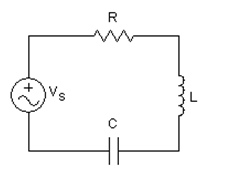

Inductive Reactance Vs Frequency
Capacitive Reactance Vs Frequency
Impedance Vs Frequency
Resonant Current
Power Factor at Resonance
Application of Series RLC Resonant Circuit
Consider a RLC circuit in which resistor, inductor and capacitor are connected in series across a voltage supply. This series RLC circuit has a distinguishing property of resonating at a specific frequency called resonant frequency. In this circuit containing inductor and capacitor, the energy is stored in two different ways.

- When a electric current flows in an inductor, energy gets stored in magnetic field.
- When a capacitor is charged, energy gets stored in static electric field.
The magnetic field in the inductor is built by the electric current, which is provided by the discharging capacitor. Similarly, the capacitor is charged by the electric current produced by collapsing magnetic field of inductor and this process continues on and on, causing electrical energy to oscillate between the magnetic field and the electric field. In some cases, at certain frequency called resonant frequency, the inductive reactance of the circuit becomes equal to capacitive reactance which causes the electrical energy to oscillate between the electric field of the capacitor and magnetic field of the inductor. This forms a harmonic oscillator for current. In RLC circuit, the presence of resistor causes these oscillation to die out over period of time and is called damping effect of resistor.
Variation in Inductive Reactance and Capacitive Reactance with Frequency
Variation of Inductive Reactance Vs Frequency
Variation of Inductive Reactance Vs Frequency
We know that inductive reactance XL = 2πfL means inductive reactance is directly proportional to frequency ( XL &prop ƒ ). When the frequency is zero or in case of DC, inductive reactance is also zero, the circuit acts as a short circuit; but when frequency increases; inductive reactance also increases. At infinite frequency, inductive reactance becomes infinity and circuit behaves as open circuit. It means that, when frequency increases inductive reactance also increases and when frequency decreases, inductive reactance also decreases. So if we plot a graph between inductive reactance and frequency, it is a straight line linear curve passing through origin as shown in the figure above.
Variation of Capacitive Reactance Vs Frequency
Variation of Capacitive Reactance Vs Frequency
It is clear from the formula of capacitive reactance XC = 1 / 2πfC that, frequency and capacitive reactance are inversely proportional to each other. In case of DC or when frequency is zero, capacitive reactance becomes infinity and circuit behaves as open circuit and when frequency increases and becomes infinite, capacitive reactance decreases and becomes zero at infinite frequency, at that point the circuit acts as short circuit, so the capacitive reactance increases with decease in frequency and if we plot a graph between capacitive reactance and frequency, it is an hyperbolic curve as shown in figure above.
Inductive Reactance and Capacitive Reactance Vs Frequency
Inductive Reactance and Capacitive Reactance Vs Frequency
From the above discussion, it can be concluded that the inductive reactance is directly proportional to frequency and capacitive reactance is inversely proportional to frequency, i.e at low frequency XL is low and XC is high but there must be a frequency, where the value of inductive reactance becomes equal to capacitive reactance. Now if we plot a single graph of inductive reactance vs frequency and capacitive reactance vs frequency, then there must occur a point where these two graphs cut each other. At that point of intersection, the inductive and capacitive reactance becomes equal and the frequency at which these two reactances become equal, is called resonant frequency, fr.
At resonant frequency, XL = XL
At resonance f = fr and on solving above equation we get,
Variation of Impedance Vs Frequency
Variation of Impedance Vs Frequency
At resonance in series RLC circuit, two reactances become equal and cancel each other. So in resonant series RLC circuit, the opposition to the flow of electric current is due to resistance only. At resonance, the total impedance of series RLC circuit is equal to resistance i.e Z = R, impedance has only real part but no imaginary part and this impedance at resonant frequency is called dynamic impedance and this dynamic impedance is always less than impedance of series RLC circuit. Before series resonance i.e before frequency, fr capacitive reactance dominates and after resonance, inductive reactance dominates and at resonance the circuit acts purely as resistive circuit causing a large amount of electric current to circulate through the circuit.
Resonant Current
Resonant Current
In series RLC circuit, the total voltage is the phasor sum of voltage across resistor, inductor and capacitor. At resonance in series RLC circuit, both inductive and capacitive reactance cancel each other and we know that in series circuit, the electric current flowing through all the elements is same, So the voltage across inductor and capacitor is equal in magnitude and opposite in direction and thereby they cancel each other. So, in a series resonant circuit, voltage across resistor is equal to supply voltage i.e V = Vr.
In series RLC circuit current, I = V / Z but at resonance electric current I = V / R , therefore the electric current at resonant frequency is maximum as at resonance in impedance of circuit is resistance only and is minimum.
The above graph shows the plot between circuit electric current and frequency. At starting, when the frequency increases, the impedance Zc decreases and hence the circuit electric current increases. After some time frequency becomes equal to resonant frequency, at that point inductive reactance becomes equal to capacitive reactance and the impedance of circuit reduces and is equal to circuit resistance only. So at this point, the circuit electric current becomes maximum I = V / R. Now when the frequency is further increased, ZL increases and with increase in ZL, the circuit electric current reduces and then the electric current drops finally to zero as frequency becomes infinite.
Power Factor at Resonance
Power Factor at Resonance
At resonance, the inductive reactance is equal to capacitive reactance and hence the voltage across inductor and capacitor cancel each other. The total impedance of circuit is resistance only. So, the circuit behaves like a pure resistive circuit and we know that in pure resistive circuit, voltage and the circuit electric current are in same phase i.e Vr , V and I are in same phase direction. Therefore, the phase angle between voltage and electric current is zero and the power factor is unity.
Application of Series RLC Resonant Circuit
Since resonance in series RLC circuit occurs at particular frequency, so it is used for filtering and tuning purpose as it does not allow unwanted oscillations that would otherwise cause signal distortion, noise and damage to circuit to pass through it.
Summary
For a series RLC circuit at certain frequency called resonant frequency, the following points must be remembered. So at resonance:
- Inductive reactance XL is equal to capacitive reactance XC.
- Total impedance of circuit becomes minimum which is equal to R i.e Z = R.
- Circuit electric current becomes maximum as impedance reduces, I = V / R.
- Voltage across inductor and capacitor cancels each other, so voltage across resistor Vr = V, supply voltage.
- Since net reactance is zero, circuit becomes purely resistive circuit and hence the voltage and the electric current are in same phase, so the phase angle between them is zero.
- Power factor is unity.
- Frequency at which resonance in series RLC circuit occurs is given by
 by
by